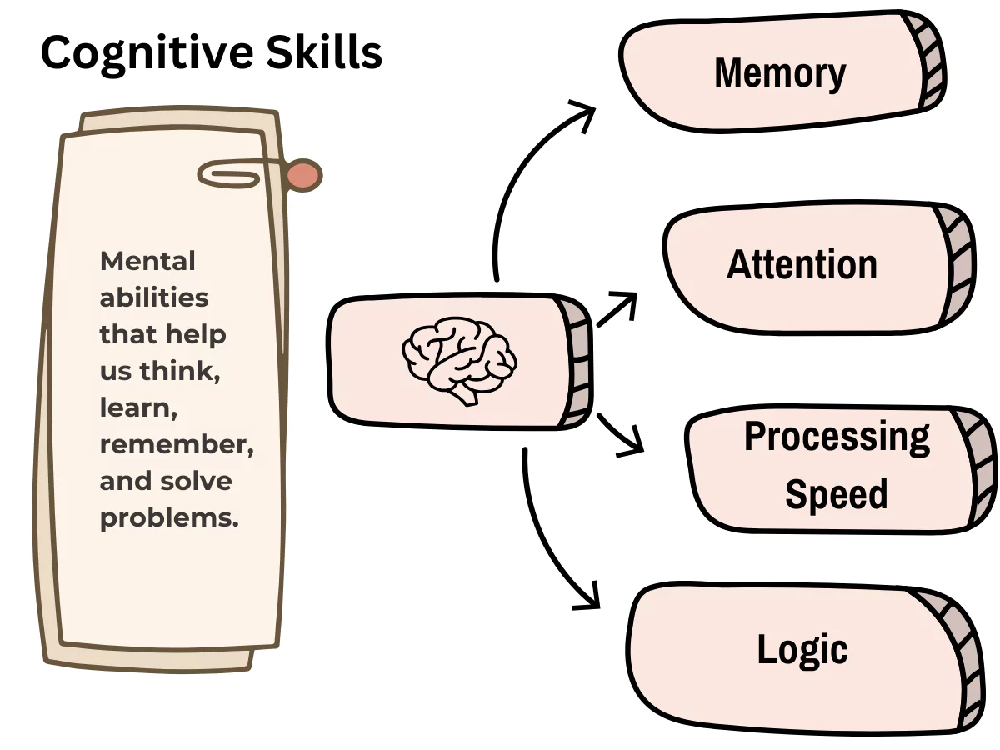

What can you learn from solving the Rubik's cube
Solving the Rubiks Cube can teach you many valuable skills such as patience, persistence, and strong problem-solving abilities. When people first start learning how to solve the cube, it can seem confusing and even frustrating because there are so many different combinations and possible moves. However, with time and practice, the puzzle begins to make more sense. By repeating the solving steps and paying attention to how the pieces move, beginners slowly build confidence and understanding. The process encourages you to stay determined and keep trying even when the solution is not immediately clear.
Another important benefit of learning to solve the Rubiks Cube is that it improves spatial reasoning. Spatial reasoning means understanding how objects move and change position in space. While solving the cube, you must imagine how turning one side affects the other pieces. This mental exercise helps strengthen the brain and improves the ability to think logically. Many teachers and educators even use puzzles like the Rubikss Cube to help students develop stronger thinking and reasoning skills.
Solving the cube can also improve hand-eye coordination. As you practice turning the different sides of the cube, your hands and eyes must work together to track the pieces and perform the correct movements. This coordination becomes smoother and faster with practice. Over time, many people are able to solve the cube more quickly because their hands become familiar with the movements and their minds recognize the patterns more easily.
In addition to being educational, the Rubiks Cube can also be a fun and relaxing hobby. Many people enjoy solving it during their free time because it helps them focus and forget about stress. Working through the puzzle gives the mind something positive and challenging to concentrate on. When you finally solve the cube after working on it for a while, it can create a strong sense of satisfaction and accomplishment.
For some people, solving the Rubiks Cube becomes more than just a hobby. They begin learning faster and more advanced methods used by speedcubers. Speedcubing is a competitive activity where participants try to solve the cube as quickly as possible. These advanced techniques take time to learn, but they can greatly reduce solving time and make the challenge even more exciting and rewarding.
Cognitive Skills: You enhance your memory and pattern recognition abilities.

Problem-Solving: You develop logical thinking and algorithmic approaches.
.webp)
Spatial Reasoning: Understanding how pieces move improves your 3D visualization skills.
Coordination: You improve hand-eye coordination through practice and repetition.
Stress Relief: Solving the cube can be a relaxing and enjoyable activity that helps reduce stress.
Perseverance: Overcoming challenges builds resilience and determination.
Competitive Spirit: You can participate in speedcubing competitions and connect with a community of enthusiasts.
Fun and Satisfaction: The sense of accomplishment from solving the cube can boost confidence and provide a rewarding experience.